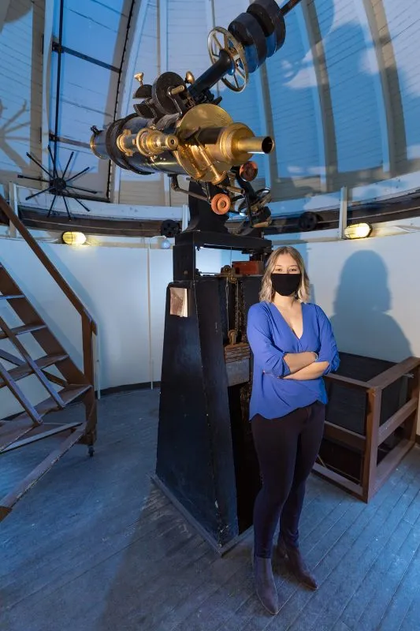

Research
My thesis was on the evolution of galaxy clusters over cosmic time. To that end, I worked on characterizing the Cluster Evolutionary Reference Ensemble At Low-z (CEREAL) sample, which is a mass-selected sample of clusters with redshifts between 0.085 and 0.25 that have been followed up with Chandra. Learn more about CEREAL here!
During my four years at Syracuse University, I conducted gravitational-wave research with the Laser Interferometer Gravitational-Wave Observatory and the Syracuse University Gravitational Wave Research Group under Professors Peter Saulson and Duncan Brown. Learn more about this work in this short video.

